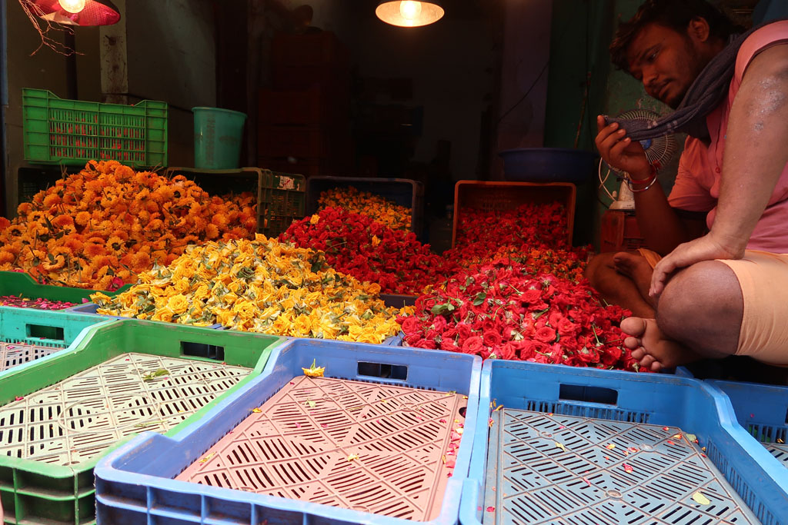
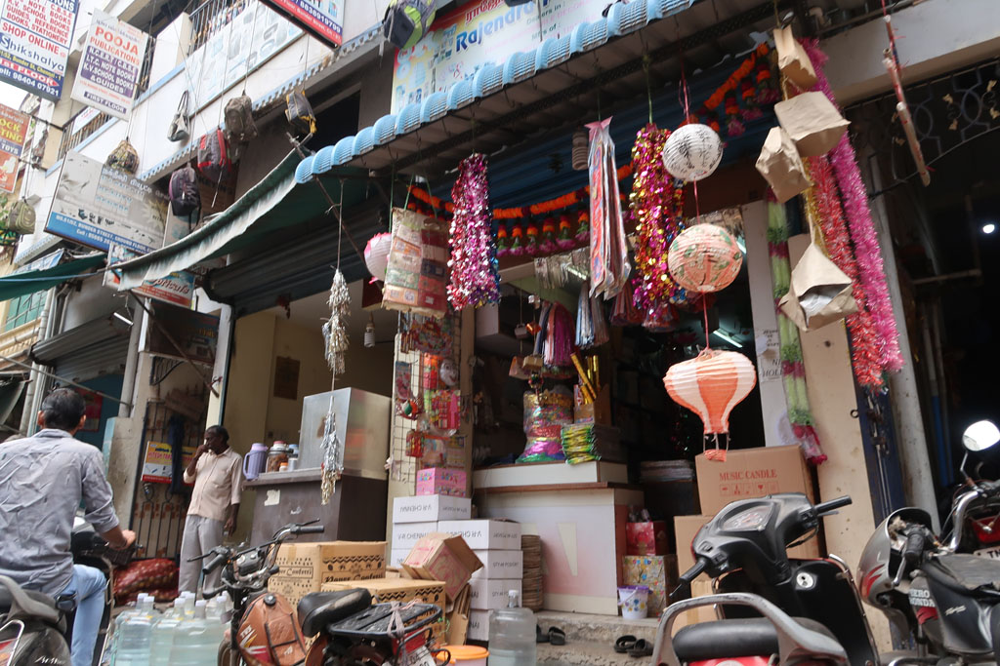

Tamil Nadu / Journée tranquille à Chennai
Ce matin grasse matinée.
9h30 Balade dans les ruelles du quartier. Arrêt café dans un bouiboui. Le grand bazar n’est pas à l’endroit indiqué par les plans. Nous tombons dessus pas hasard. Et on passe notre matinée à déambuler et nous égarer dans toutes ces ruelles. Dans une boutique d’articles de sport nous augmentons notre collection de “Strickers” pour notre carrom.
12h00 retour au woodland une autre de nos cantines, fried veg noodles, butter naan, garlic naan, masala dosa, plain soda x2, lemon soda, pepsi 364R


13h00 retour à l’hôtel pour nous reposer de cette longue marche.
16h00 tuk tuk pour un temple au centre de Triplicane. On s’aperçoit que nous avions déjà visité ce quartier lors de notre premier passage. On se dirige alors vers Marina Beach. On remonte la plage vers les baraques. Visite de ce marché improvisé sur la plage.

18h00 Tuk tuk pour revenir dans notre quartier. Douches pour tous avant de ressortir manger.

… le carnet de voyage s’arrête là….
mais après ce fut taxi jusqu’à l’aéroport vers 22h00